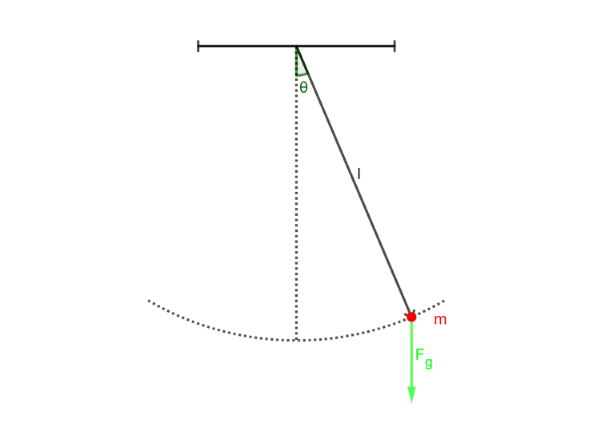

Einführung
Das Mathematische Pendel (oder auch Fadenpendel gennannt) besteht aus einem Faden der Länge \(l\) und einem Massenpunkt der Masse \(m\), welcher an einem Ende des Fadens aufgehängt wird.
Das Andere Ende wird an einer Befestigung aufgehängt. Wir betrachten nun die Folgende Situation: Der Faden wird relativ zu seiner Ruhelage (er hängt senkrecht von der Befestigung) um einen Winkel \(\theta\) ausgelenkt.
Auf den Massenpunkt wirkt dabei die Gewichtskraft mit Ortsfaktor \(g\). Das ganze soll in der folgdenen Skizze dargestellt werden:

Das Mathematische Pendel ausgelenkt um den Winkel \(\theta\)
Im Folgenden wollen wir die Bewegungsgleichung für dieses System aufstellen.